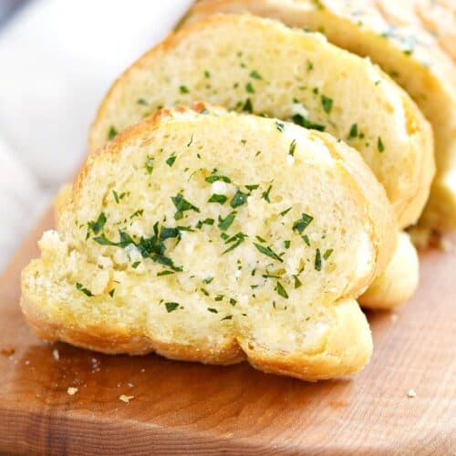

Worlds Best Garlic Bread

Truly the worlds best garlic bread recipe you can find on the internet.
If you're a garlic lover this garlic bread recipe's for you! Garlic, butter, olive oil, and freshly baked bread-what else can you ask for?
Make our most popular garlic bread recipe today to find out what all the fuss is about!
Ingredients
- 1/2 cup softened butter
- 3 tablespoons of olive oil
- 4 cloves of minced garlic
- 1 tablespoon of garlic powder
- 1 table spoon of chopped fresh parsley
- 1/2 tablespoon salt
- 1 loaf of French bread
Directions
- Preheat the oven to 400 degrees F (200 degrees C). Line a baking sheet with aluminum foil.
- Mix butter, olive oil, minced garlic, garlic powder, parsley, and salt in a bowl until well combined.
- Cut bread loaf into 1-inch slices and spread garlic mixture over each slice. Place each on a baking sheet. Wrap with additional aluminum foil.
- Bake in the preheated oven until bread is crispy and heated through, 25 to 30 minutes.